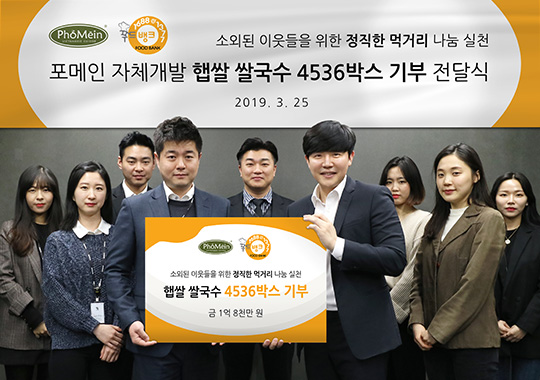
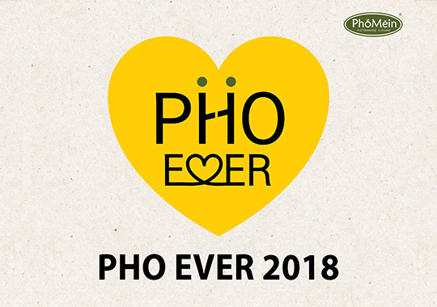
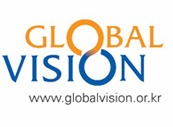
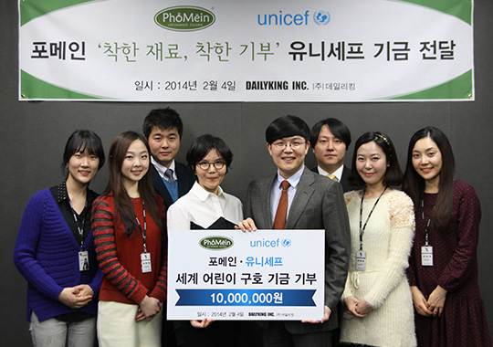

フォーメインが作りあ
げる世界
PHOMEIN CSR
冷めない熱い心で暖かい今日、暖かい世界を作ります。

フォーメインは信頼される模範企業という一念の下、
倫理経営を基に恵まれない階層や開発途上国の子供の救援に力を貸しています。
活動紹介

 フォーメイン、新米のライスヌードル4,536ボックスを寄付
フォーメイン本社では新米のみを使用して独自開発に成功した新米のライスヌードルをお店で披露することに先立って、社会的弱者層のために1億8千万ウォン相当のライスヌードル4,536ボックスを寄付しました。
フォーメイン、新米のライスヌードル4,536ボックスを寄付
フォーメイン本社では新米のみを使用して独自開発に成功した新米のライスヌードルをお店で披露することに先立って、社会的弱者層のために1億8千万ウォン相当のライスヌードル4,536ボックスを寄付しました。

 「PHO EVER 2018」 職業体験メンタリング フォーメインは、社団法人グローバルビジョンと共に就職支援が必要な青少年を対象に フォーメインで経験できる職業について学習及び実習を行う 職業体験メンタリング「PHO EVER 2018」を行いました。

 「浦項地震による被害住民への支援」活動に寄付
フォーメインの公式フェイスブックで浦項地震による被害住民への支援寄付キャンペーン「PHO U x 4」を
行って募金された基金の4培を「希望ブリッジ全国災害救護協会」に寄付しました。
「浦項地震による被害住民への支援」活動に寄付
フォーメインの公式フェイスブックで浦項地震による被害住民への支援寄付キャンペーン「PHO U x 4」を
行って募金された基金の4培を「希望ブリッジ全国災害救護協会」に寄付しました。

 '「新生児を助ける 帽子編みキャンペーン」 に参加
フォーメイン本社の役職員及び加盟店は低体重や栄養不足の新生児たちの体温を維持し、
あたたかい生命の力を養うために200個余りの帽子を製作してセーブ・ザ・チルドレンに寄付しました。
'「新生児を助ける 帽子編みキャンペーン」 に参加
フォーメイン本社の役職員及び加盟店は低体重や栄養不足の新生児たちの体温を維持し、
あたたかい生命の力を養うために200個余りの帽子を製作してセーブ・ザ・チルドレンに寄付しました。

 城南地域児童センターに「幸福ギフトボックス」を届ける
城南地域児童センター3か所にフォーメイン本社の役職員が荷造りした「幸福ギフトボックス」
100箱をお届けし、子供たちと一緒に生春巻きを作って夕食を楽しみながらあたたかなひとときを過ごしました。
城南地域児童センターに「幸福ギフトボックス」を届ける
城南地域児童センター3か所にフォーメイン本社の役職員が荷造りした「幸福ギフトボックス」
100箱をお届けし、子供たちと一緒に生春巻きを作って夕食を楽しみながらあたたかなひとときを過ごしました。

 ハビタット「希望の家作り」基金活動を後援
地域社会に寄与し、無住宅低所得層家庭を援助するためフォーメインの役職員たちと共に
心をひとつにしてハビタットに基金をお渡ししました。
ハビタット「希望の家作り」基金活動を後援
地域社会に寄与し、無住宅低所得層家庭を援助するためフォーメインの役職員たちと共に
心をひとつにしてハビタットに基金をお渡ししました。

 ハビタット「希望の家作り」建築ボランティア
無住宅低所得層の家庭を援助し暖かい家をプレゼントするため
フォーメインの役職員と一緒に汗を流しながら「希望の家作り」建築ボランティア活動を行いました。
ハビタット「希望の家作り」建築ボランティア
無住宅低所得層の家庭を援助し暖かい家をプレゼントするため
フォーメインの役職員と一緒に汗を流しながら「希望の家作り」建築ボランティア活動を行いました。
 「愛の練炭配達」ボランティア
フォーメイン本社の役職員みんなが「愛の練炭配達」ボランティア活動に参加して
「社団法人 暖かい 韓半島、愛の練炭分かち合い運動」に練炭5,000枚を寄贈し、
京畿道城南市金土洞の低所得世帯に練炭1,500枚を直接お届けしました。
「愛の練炭配達」ボランティア
フォーメイン本社の役職員みんなが「愛の練炭配達」ボランティア活動に参加して
「社団法人 暖かい 韓半島、愛の練炭分かち合い運動」に練炭5,000枚を寄贈し、
京畿道城南市金土洞の低所得世帯に練炭1,500枚を直接お届けしました。

世界子ども救援基金をお渡しする 業界初にユニセフと寄付協約を結んで援助の手を必要とする 世界貧困児童たちに小さな希望になることを願いながら 世界子ども救助基金をお渡しする意味深いイベントを行いました。